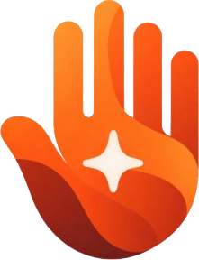

Live recognition
Sign into your webcam and watch the words appear. It reads motion, not just handshapes.

Headphones recommended. You can switch sound on or off at any time.
SignBridge watches 21 points on each hand and turns American Sign Language into words, live in your browser.
More than 70 million deaf people sign every day. Most of the world still can't read a single word. SignBridge is a bridge: a camera, a small neural network and a lot of care, so a conversation never has to wait for an interpreter.
MediaPipe tracks both hands from an ordinary webcam, frame by frame, right on your device. No gloves, sensors or special camera.
Every hand becomes 21 landmarks in 3D, so each frame is 126 numbers. They are centered on the wrist and scaled, which makes recognition work for any hand size and distance.
A sign is movement, not a photo. A rolling 32-frame buffer goes into a bidirectional GRU with attention pooling, which learns how a sign unfolds over time.
You get ranked Top-5 guesses with confidence in about 40 ms on Apple Silicon. Then SignBridge can read the sign aloud.
Benchmarked on 32,941 ASL Citizen test samples · BiGRU attention-pooling classifier · 48.62% Top-1
Built for Deaf and hard-of-hearing people, for the friends and families learning alongside them, and for developers building accessible tools.
Sign into your webcam and watch the words appear. It reads motion, not just handshapes.
Drop in an .mp4, .mov or .webm clip to analyze recorded signing offline.
Demonstration videos for 2,731 signs and a practice mode that checks your form as you go.
Teach SignBridge your own signs and personalize recognition to the way you move.
Ranked Top-5 predictions with confidence bars. Press D for live tracking and latency telemetry.
Hear translations spoken aloud, or connect the JSON REST API to your own app.
Open SignBridge, allow your camera and sign. It's free, it runs in your browser and your video stays on your device.